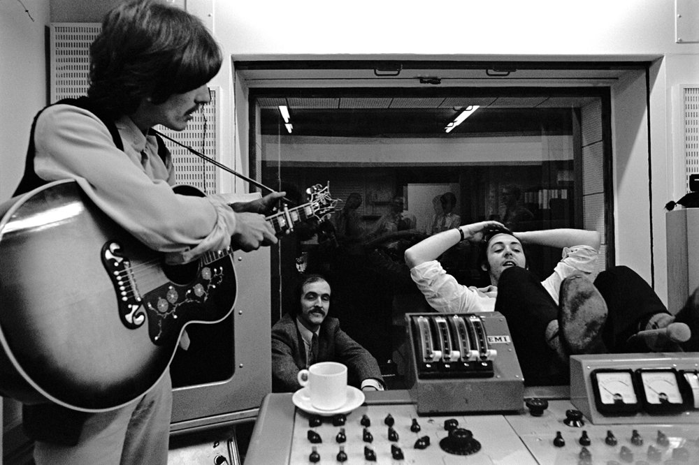

- Back In The U.S.S.R.
- Dear Prudence
- Glass Onion
- Ob-La-Di, Ob-La-Da
- Wild Honey Pie
- The Continuing Story of Bungalow Bill
- While My Guitar Gently Weeps
- Happiness Is A Warm Gun
- Martha My Dear
- I’m So Tired
- Blackbird
- Piggies
- Rocky Raccoon
- Don’t Pass Me By
- Why Don’t We Do It In The Road?
- I Will
- Julia
- Birthday
- Yer Blues
- Mother Nature’s Son
- Everybody’s Got Something To Hide Except Me And My Monkey
- Sexy Sadie
- Helter Skelter
- Long, Long, Long
- Revolution 1
- Honey Pie
- Savoy Truffle
- Cry Baby Cry
- Revolution 9
- Good Night
White Album
The Beatles ou "The White album", como se tornou mais conhecido, foi lançado em 22 de novembro de 1968, no quinto aniversário de seu segundo álbum, With The Beatles. Um total de 34 novas faixas foram lançadas em 1968 e 30 foram contidas neste único LP duplo.
Após a gravação de seu single "Lady Madonna" em fevereiro, os Beatles voaram para Rishikesh, na Índia, para várias semanas de meditação com Maharishi Mahesh Yogi, durante as quais desfrutaram de um período prolífico de composição de canções. As gravações começaram em Abbey Road em 30 de maio e o trabalho de estúdio ocupou a maior parte do tempo até a sessão final em meados de outubro.
A arte colorida que adornou os álbuns do Sgt. Pepper's Lonely Hearts Club Band e da Magical Mystery Tour estava ausente aqui. A carteira dupla tinha apenas as palavras The BEATLES gravadas na capa. As primeiras cópias também tinham um número individual estampado na frente. Dentro do pacote, juntamente com os dois discos envoltos em mangas internas pretas, havia quatro fotografias individuais dos caras e um pôster dobrado contendo uma colagem de fotos com as letras das músicas no verso.

The Beatles foi o primeiro álbum do grupo a aparecer na gravadora Apple. A mudança da Parlophone para a Apple ocorreu pela primeira vez com o lançamento do single "Hey Jude" em agosto de 1968.
Apesar do fato de que era um álbum duplo, entrou na parada do Reino Unido em 1º lugar e ocupou essa posição por oito das 22 semanas que passou na parada. A situação nos EUA foi ainda mais impressionante, com uma permanência de nove semanas no primeiro lugar durante uma execução inicial de 65 semanas.